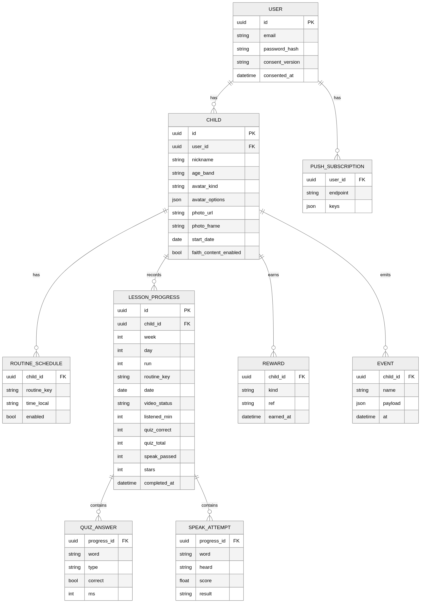

데이터·API 명세서
MVP는 기기 저장(local-first) 으로 동작하고, 서버는 같은 모양의 API로 동기화한다. 앱 코드는 ProgressRepository 인터페이스만 보며, 로컬 구현과 서버 구현을 바꿔 끼운다.
ERD

값 정의
| 필드 | 값 |
|---|---|
age_band |
6 7 8 9-10 |
avatar_kind |
builder (부위 옵션) · photo |
routine_key |
morning theme dinner bedtime · 주말 선택: faith_song faith_story |
video_status |
none · auto (타이머 완료) · manual (부모 확인) |
speak result |
pass · pass_after_retry · pass_by_parent · skipped · given (2회 미달 통과) |
reward kind |
sticker · day_badge · week_trophy |
run |
같은 Week 반복 회차. 1부터 |
상태 계산 (순수 함수, entities/)
| 함수 | 입력 | 출력 |
|---|---|---|
dayIndexOf(startDate, today) |
시작일, 오늘 | 1~7 또는 범위 밖 |
nodeState(progress, dayIndex, todayIndex) |
진행, Day, 오늘 | locked open inProgress done missed |
todayMinutes(progressList) |
오늘 진행 | 합계 분 |
streak(progressByDate, today) |
날짜별 완료 여부 | 연속 일수 (오늘 미완료면 어제까지) |
buildQuiz(words, ageBand, seed) |
단어, 연령, 시드 | 문항 8개 |
judgeSpeech(target, heard) |
목표, 인식 결과 | 0~1 점수, 통과 여부(≥0.7) |
콘텐츠 JSON
파일: content/weeks/week1.json. 컴포넌트는 이 구조만 안다.
{
"id": "y1-w01", "week": 1, "theme": "Colors", "themeKo": "색깔",
"routines": [
{
"key": "morning", "kind": "listen", "targetMinutes": 20, "order": 1,
"video": { "provider": "youtube", "id": "CCClRXsYiik",
"title": "Good Morning Mr. Rooster + More", "channel": "Super Simple Songs", "durationSec": 3944 },
"parentTip": "등원 준비하면서 틀어주세요. 화면을 안 봐도 괜찮아요.",
"phrases": ["Good morning.", "Let's get dressed.", "Put on your shoes."],
"sticker": "sticker-sun"
},
{
"key": "theme", "kind": "play", "targetMinutes": 30, "order": 2,
"video": { "provider": "youtube", "id": "v-BvRlsbUiU",
"title": "Red Yellow Green Blue + More", "channel": "Super Simple Songs", "durationSec": 3120 },
"parentTip": "함께 보고, 끝나면 놀이를 해요.",
"words": ["red", "yellow", "green", "blue", "apple", "sun", "clover", "sky"],
"sentences": [
{ "text": "It's red.", "answer": "red" },
{ "text": "It's blue.", "answer": "blue" },
{ "text": "It's yellow.", "answer": "yellow" },
{ "text": "It's green.", "answer": "green" }
],
"quiz": { "count": 8, "mix": { "pickImage": 3, "pickWord": 2, "match": 1, "sentenceColor": 2 } },
"speak": { "words": ["red", "yellow", "green", "blue"] },
"sticker": "sticker-palette"
}
],
"weekend": {
"faith_song": { "kind": "listen", "targetMinutes": 20, "playlist": "PLpw2Kv-fs8gAlxnJNsnflxx0wSzJIFG1a", "sticker": "sticker-note" },
"faith_story": { "kind": "listen", "targetMinutes": 20, "playlist": "PLpw2Kv-fs8gBfxMi6pToFPD9HuwyaDT_i", "sticker": "sticker-book" }
}
}
단어 사전: content/words.json
{
"red": { "ko": "빨강", "image": "words/red.png", "audio": "words/red.mp3", "color": "#E53935", "group": "color" },
"apple": { "ko": "사과", "image": "words/apple.png", "audio": "words/apple.mp3", "group": "thing" }
}
API (FastAPI)
기본 경로 /api/v1. 인증은 Authorization: Bearer <access>.
| 메서드 | 경로 | 설명 | 요청 → 응답 |
|---|---|---|---|
| POST | /auth/signup |
가입 | email, password, consents → tokens |
| POST | /auth/login |
로그인 | email, password → tokens |
| POST | /auth/refresh |
토큰 갱신 | refresh → tokens |
| POST | /auth/password-reset |
재설정 메일 | email → 204 |
| DELETE | /me |
탈퇴 (즉시 삭제) | → 204 |
| GET | /children |
아이 목록 | → Child[] |
| POST | /children |
아이 생성 | nickname, ageBand, avatar… → Child |
| PATCH | /children/{id} |
수정 | 부분 → Child |
| PUT | /children/{id}/photo |
사진 업로드 (multipart, 256px) | → photoUrl |
| PUT | /children/{id}/schedule |
루틴 시각 4개 | RoutineSchedule[] → 204 |
| GET | /content/weeks/{week} |
콘텐츠 JSON | → Week |
| GET | /children/{id}/progress?from&to |
진행 조회 | → LessonProgress[] |
| PUT | /children/{id}/progress/{lessonKey} |
진행 저장 (멱등, 클라이언트 id) | LessonProgress → 200 |
| POST | /children/{id}/manual-check |
수동 체크·해제 | date, routineKey, checked → 200 |
| GET | /children/{id}/summary?week |
대시보드 요약 | → Summary |
| POST | /push/subscriptions |
웹 푸시 구독 | subscription → 201 |
| DELETE | /push/subscriptions |
구독 해제 | endpoint → 204 |
| POST | /push/test |
테스트 알림 | → 202 |
| POST | /events |
이벤트 배치 | Event[] → 202 |
lessonKey = {week}-{run}-{day}-{routineKey} 예: 1-1-3-theme
동기화
- 진행은 기기에 먼저 쓰고 큐에 넣는다. 온라인이면
PUT progress로 올린다 (멱등) - 충돌: 서버는
completed_at이 더 이른 쪽을 유지. 수동 체크는 마지막 요청 우선 - 콘텐츠 JSON은 앱에 번들, 서버 버전이 높으면 교체
이벤트
| 이름 | 페이로드 | 시점 |
|---|---|---|
lesson_open |
lessonKey, from(node now_card notification) |
L0 열림 |
video_open |
lessonKey | 유튜브 열기 |
video_done |
lessonKey, status(auto/manual), minutes | ✓ 또는 수동 |
quiz_answer |
lessonKey, word, type, correct, ms | 문항마다 |
speak_result |
lessonKey, word, result, score | 단어마다 |
lesson_done |
lessonKey, stars, durationSec | L4 |
day_done |
date | 4개 완료 |
manual_check |
date, routineKey, checked | 대시보드 |
notification_open |
kind, routineKey | 알림 탭 |
guide_seen |
guideId | 가이드 닫힘 |
파일럿 지표 산출
| 지표 | 계산 |
|---|---|
| 루틴 완료율 | lesson_done 수 / (활성 아이 수 × 4 × 일수) |
| 하루 90분 달성률 | day_done 일수 / 활성 일수 |
| 4주 잔존율 | 28일째 주에 1회 이상 lesson_done 한 아이 / 시작 아이 |
| 단어 정답률 | quiz_answer.correct 평균, 단어별 |
| 말하기 시도율 | result ≠ skipped 비율 |
| 수동 비율 | video_status manual / 전체 |